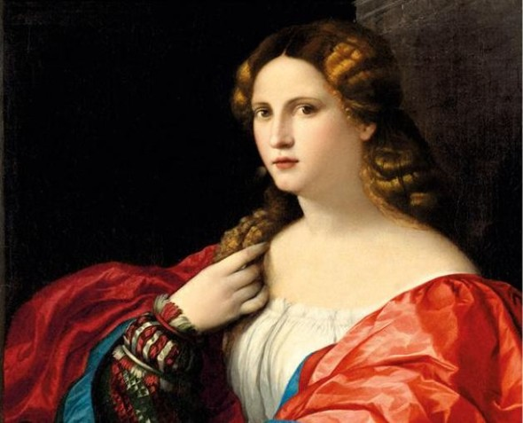
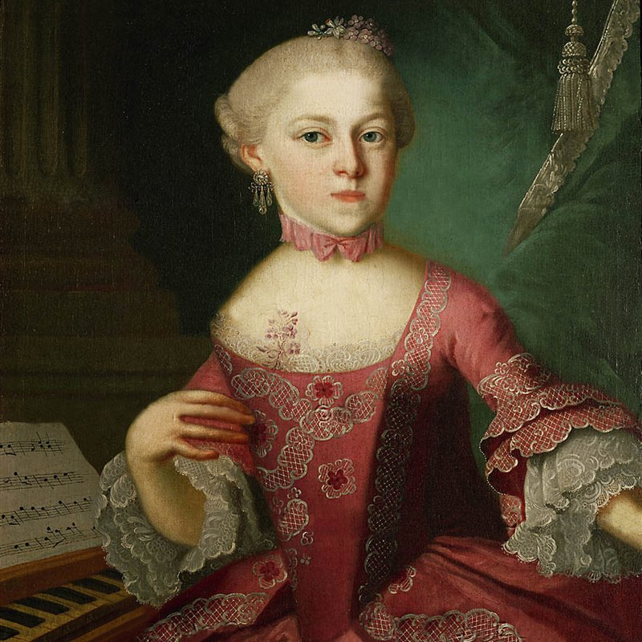
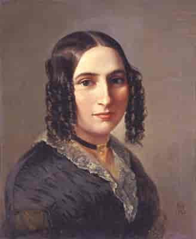
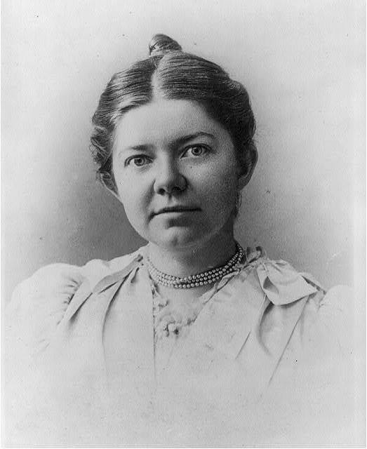
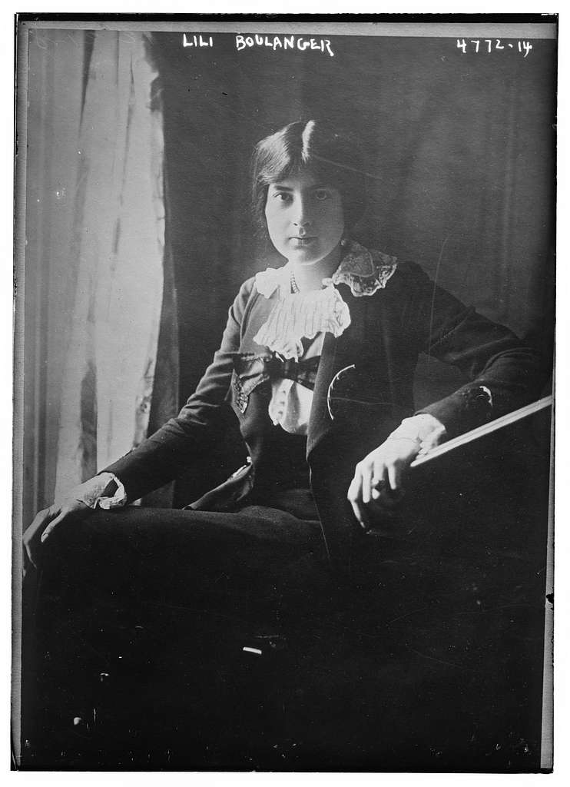
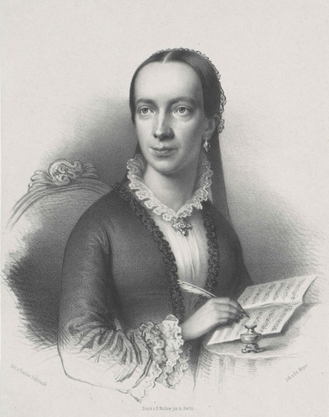
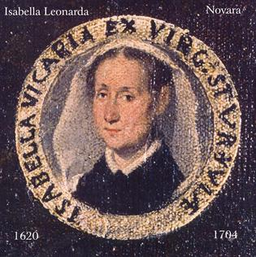

Clara Josephine Schumann
- nata a Lipsia nel 1819;
- musicista dai tempi dell’asilo;
- insegnante di pianoforte;
- redattrice di opere per diletto;
- grande talento musicale (meglio di altri compositori dell’epoca…);
- intrattenitrice musicale per figure illustre;
- nominata a 18 anni virtuosa da camera dell’Imperatore;
- sposa il suo grande amore, ma viene internato in un centro psichiatrico;
- l’essere vedova non la ferma dal comporre e ottenere successo;
- Cavallo di battaglia: “Caprices en forme de Valse”.

Francesca Caccini
- nata a Firenze nel 1587;
- per gli amici La Cecchina;
- appassionata di cultura e letteratura;
- forse vecchio flirt con Michelangelo Buonarroti il Giovane;
- conosciuta per essere parte del gruppo musicale “Concerto Caccini”, canta in numerose corti;
- passa poi alla carriera da solista;
- istituisce anche una scuola di canto;
- compone numerose opere strumentali e arie solistiche;
- Cavallo di battaglia: “Il Ballo delle Zigane”.
Crediti foto: A Modern Reveal

Maria Anna Mozart
- nata a Salisburgo nel 1751;
- sorella di Amadeus e figlia di musicisti;
- virtuosa nel pianoforte e clavicembalo;
- fonte d’interesse e musa ispiratrice per il fratello minore Amadeus;
- musicista on the road assieme al fratello in giro per le corti di Vienna;
- definita una delle migliori musiciste d’Europa, ma rimase umile;
- obbligata dal padre ad abbandonare in pubblico la vita da musicista;
- appena vedova, torna a comporre musica;
- Cavallo di battaglia non pervenuto, ma di dubbia appartenenza al fratello le prime opere rinvenute.

Fanny Mendelssohn
- nata ad Amburgo nel 1805;
- amante della musica da sempre;
- derubata dal fratello Felix di 4 suoi libri di brani per piano e 6 opere composte;
- alcune sue opere sono state apprezzate dalla Regina Vittoria;
- oscurata dal fratello, mostra grande memoria musicale e lo batte;
- frequentatrice di salotti letterari ed illustri uomini;
- continuamente ostacolata dal padre e fratello, riesce comunque a scrivere e dare concerti;
- Cavallo di battaglia: “Trio in Re minore, Op.11”.

Amy Beach
- nata a Henniker nel 1867;
- figlia di una pianista invidiosa;
- sin dall’età di 2 anni mostra incredibili capacità musicali e compositrici;
- a 4 anni compone il primo brano;
- a 7 anni si esibisce in pubblico;
- la gelosia della madre la porta ad esercitarsi su un pianoforte immaginario;
- quando lascia il lavoro da solista passa alla composizione totale;
- Cavallo di battaglia: “Gaelic Symphony”.

Lily Boulanger
- nata a Parigi nel 1893;
- mostra sin da subito grandi doti musicali;
- morto il padre, è costretta a studiare ed eccellere nella musica;
- vince numerosi premi e concorsi;
- diplomata in breve tempo in conservatorio;
- assieme alla famiglia, istituisce un ritrovo per musicisti e scrittori;
- nel 1912 partecipa al Prix de Rome, ma sciagura vuole che durante la sua esibizione collassa per un malore;
- ...riuscirà l'amore a farla guarire?
- Cavallo di battaglia: “Les sirènes”.

Emilie Mayer
- nata a Friedland nel 1812;
- compositrice di musica Romantica;
- musicista tardiva rispetto alla concorrenza;
- proficua compositrice;
- ha scritto 8 sinfonie e 15 aperture di concerto;
- è Direttrice Associata dell’Opera Academy di Berlino;
- orfana dei genitori, non si deprime e continua ad avere successo;
- le sue opere vengono suonate da grandi orchestre;
- Cavallo di battaglia: “Sinfonia in Si minore”.

Isabella Leonarda
- nata a Novara nel 1704;
- dedita alla vita di Chiesa;
- costretta dal padre a farsi monaca da giovane;
- ha scritto solo musica sacra, per onorare Dio;
- obbligata a suonare solo l’organo e comporre musica per liturgie sacre;
- dilettevole cantante solista e, più tardi, anche violinista;
- diventa una delle compositrici italiane più rappresentative del 16esimo e 17esimo secolo
- Cavallo di battaglia: “Sic Ergo Anima”.
Crediti foto: www.novadomusnovara.it